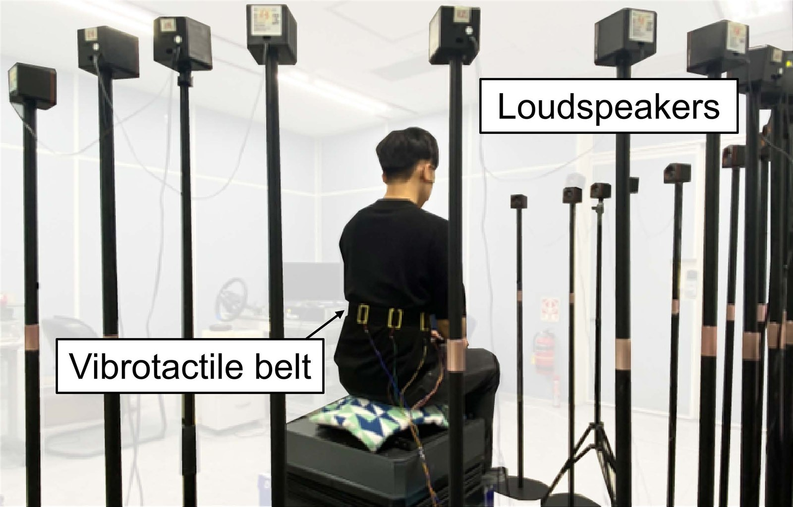
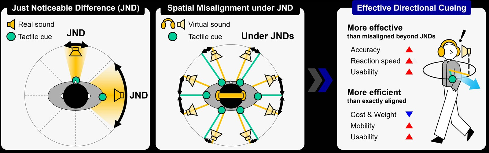

Aligning sound and touch
How closely do sound and touch need to align?
IEEE TVCG · Journal article

The question
Spatial sound and vibration can point toward the same event, but their physical locations do not always match. This work measures how much directional mismatch people can distinguish and tests cueing within those perceptual limits.
The system and study
A vibrotactile belt, spatial sound sources, and an interactive hazard-avoidance task connect psychophysical measurements with an applied cueing system.
What we learned
Cue alignment within the measured perceptual tolerance supported comparable hazard-avoidance performance and usability to exact physical alignment in the tested conditions.

Research presentation
Publication
Perceptual Alignment of Spatial Auditory and Tactile Stimuli for Effective Directional Cueing
IEEE TVCG, 2025.